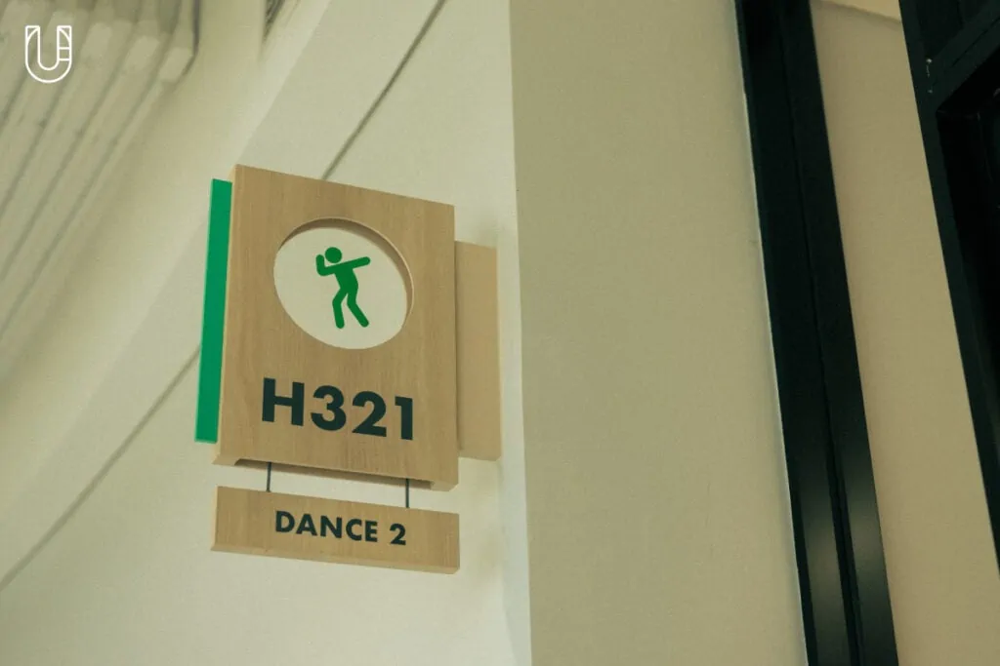

“ระบบการศึกษาแบบดั้งเดิมคือถนนแคบๆ เส้นเดียว ที่เด็กถูกบังคับให้ต้องเดิน ในขณะที่โลกใบนี้ยังมีทางอีกมากมาย” หนึ่งในประโยคที่ผมชอบและเห็นด้วยมากที่สุดจาก Cameron Fox ผู้ก่อตั้งโรงเรียนและคุณครูใหญ่ของ VERSO International School โรงเรียนนานาชาติเปิดใหม่แห่งย่านบางนา ที่สอนโดย Learning Designer หรือนักออกแบบการเรียนรู้ ที่พร้อมจะปรับแต่งทั้งวิชาการและทักษะชีวิตให้กับเด็กๆ
ไม่ใช่วิทย์-คณิต ศิลป์-คำนวณ หลักสูตรที่ VERSO สอนให้นักเรียนเรียกว่า Future Ready Skill หรือทักษะแห่งอนาคตที่มีด้วยกันถึง 141 ทักษะ ซึ่งไม่ได้หมายความว่าเด็กคนหนึ่งต้องอัดทุกอย่างลงไปในสมอง พวกเขามีอิสระที่จะเลือกทำในสิ่งที่ชอบในวันนี้ ที่หากว่าวันข้างหน้าเกิดไม่ถูกใจ และอยากปรับเปลี่ยนใหม่ก็คุยกันได้เสมอ
DNA อย่างหนึ่งของโรงเรียนนี้ที่ผมสัมผัสได้คือทำให้เด็กมีความมั่นใจในตัวเอง ในที่นี้ไม่ได้หมายถึงการกล้าแสดงออก แต่กล้าที่จะชอบในสิ่งที่ตัวเองรักโดยไม่ถูกกฎเกณฑ์มาบีบบังคับ ด้วยการสอนวิธีคิดแบบ Designer กล่าวคือคนที่เป็นนักออกแบบนอกจากจะมีหัวด้านความสร้างสรรค์ สิ่งสำคัญคือต้องรับฟังและมีความเห็นอกเห็นใจคนอื่น “Put yourself in someone else’s shoes” คาเมรอนย้ำเรื่องนี้มาก
วันนี้เราเดินเข้ามาสนทนากับผู้ก่อตั้งโรงเรียน ออฟฟิศของเขาที่เป็นห้องขนาดกลางไม่ได้ใหญ่โตเวอร์วังเมื่อเทียบพื้นที่ทั้งหมดของสถานศึกษา แต่มีหน้าต่างขนาดใหญ่ไว้รับแสง มองเห็นธงชาติ และจุดรับ-ส่งอยู่ไม่ไกล นอกเหนือจากโต๊ะและอุปกรณ์สำนักงาน ห้องนี้ตกแต่งห้องด้วยรูปจอห์น เลนนอน และงานศิลปะของ Banksy ว่าแต่อนาคตของการศึกษาจะมีหน้าตาเป็นแบบไหน คนรุ่นถัดไปจะเปลี่ยนโลกได้อย่างไร มาหาคำตอบไปพร้อมกันดีกว่าครับ

อันดับแรกเราอยากแนะนำ VERSO ให้ผู้อ่านของเราได้รู้จักก่อนคุณจะอธิบายแนวคิดของเวอร์โซให้เข้าใจได้ง่ายๆอย่างไร ความมุ่งมั่นของโรงเรียนคืออะไร
เราโชคดีมากที่ได้ทำ VERSO มาตั้งแต่แรก เริ่มต้นกันจากรากฐาน มีหลายสิ่งหลายอย่างที่เราฝันไว้เกี่ยวกับโรงเรียน เราคิดว่าสิ่งที่สำคัญที่สุดที่โรงเรียนจะต้องสร้างให้กับนักเรียนของเรามีด้วยกัน 3 เรื่อง
ข้อแรก ในฐานะที่เราเป็นโรงเรียนนานาชาติ นักเรียนจึงมักจะเป็นกลุ่มคนที่เดินทางไปประเทศต่างๆ อยู่ตลอดเวลา ดังนั้นสิ่งที่เราให้ความสำคัญมากที่สุดตั้งแต่แรกเริ่มคือต้องเข้าใจก่อนเลยว่าคุณเป็นใคร ทั้งในด้านปัจเจกบุคคลและวัฒนธรรม
ข้อที่สอง เราต้องการให้เด็กรู้จักวิธีในการเข้าหาคนอื่น ฟังดูแปลกใช่ไหม แต่หลังจากที่พวกเขาออกจากโรงเรียนเพื่อไปเข้ามหาวิทยาลัยหรือทำงานในอนาคต ปฏิสัมพันธ์เป็นสิ่งที่จำเป็นมาก ในโลกของการทำงานคุณจะเจอกับคนที่มีปูมหลังต่างกันอยู่ตลอดเวลา เราใช้เวลาเยอะมากในการสอนให้นักเรียนมีความสามารถในการปฏิสัมพันธ์กับโลกภายนอก
แต่ก็ต้องยอมรับว่าเราไม่ได้เชื่อมต่อกับชุมชนได้ดีเท่าที่ควร เราอยากสอนเด็กให้เข้าใจบริบทของกรุงเทพฯ อยากสร้างสายสัมพันธ์ที่เชื่อมโยงพวกเขากับประเทศไทยเข้าไว้ด้วยกัน บางครั้งโรงเรียนเป็นบับเบิ้ลที่กั้นพวกเขาจากโลกภายนอก นักเรียนนานาชาติหลายคนแม้กระทั่งนักเรียนที่เป็นคนไทย พวกเขาไม่มีทักษะเหล่านี้และพบว่ายากมากที่จะรู้สึกผูกพันกับประเทศไทย เราสนใจเรื่องนี้มาก และพยายามจะพัฒนาต่อ
ข้อที่สามคือ ความมั่นใจ พวกเราต้องการให้เด็กมีความมั่นใจในสิ่งที่พวกเขาเป็น และเส้นทางที่ตนเองอยากเดินต่อ ความมั่นใจคือเข็มทิศที่จะพาพวกเขาไปได้ตลอดทาง และสำหรับเรามันมีความสำคัญมาก
คุณคิดว่าอะไรคือปัญหาของระบบการศึกษาแบบดั้งเดิม และเราจะทำอย่างไรกับสิ่งนี้
ปัญหาที่ใหญ่ที่สุดคือมันไม่ได้ถูกออกแบบมาเพื่อวันนี้ (ยิ้ม) และไม่สามารถสร้างแรงจูงใจในการเรียนรู้ได้มากพอสำหรับทุกคนอย่างที่ควรจะเป็น โรงเรียนควรจะเป็นสถานที่ที่เปิดโอกาสให้เมล็ดพันธุ์ได้เบ่งบาน ได้เข้าใจว่าพวกเขาเป็นใคร ต้องค้นหาพรสวรรค์เหล่านั้นให้เจอ และทำให้พวกเขามั่นใจในสิ่งที่ตัวเองรักด้วย
โรงเรียนแบบดั้งเดิมมีหลักสูตรที่ดีนะ แต่ไม่มีพื้นที่มากเพียงพอสำหรับคนที่ต่างออกไป และการคิดจากบนลงล่างอยู่ตลอดเวลาก็ทำให้เด็กมีความกดดันมากและไม่มีเวลาว่างมากเพียงพอ พวกเขาถูกบังคับให้ทำการบ้านจำนวนมาก ปัจจุบันเราไม่เชื่อว่าสิ่งเหล่านั้นมีความจำเป็นอีกต่อไปแล้ว โรงเรียนควรจะเติมเต็มความต้องการที่หลากหลายให้ได้มากกว่านี้

สิ่งที่ VERSO กำลังทำ ต่างจากระบบการศึกษาแบบดั้งเดิมอย่างไร
เรารวบรวมทีมนักออกแบบการเรียนรู้ที่มีประสบการณ์ในการศึกษาระดับนานาชาติ งานของพวกเขาคือการรื้อรูปแบบการศึกษาดั้งเดิมออกแล้วประกอบร่างมันขึ้นมาใหม่ ให้หลักสูตรเป็นมากกว่าเรื่องวิชาการแต่มุ่งเน้นไปที่ทักษะ เราศึกษาทักษะมากมายที่จำเป็นสำหรับเด็ก และตลอดกระบวนการที่ยาวนานนี้ก็สามารถพูดได้เลยว่าเราเปลี่ยนการเรียนรู้แบบเดิม และสร้างพื้นที่สำหรับการเรียนรู้เรื่องทักษะแห่งอนาคต (Future Ready Skill) ซึ่งมีอยู่ทั้งหมด 141 สกิล ทั้งออนไลน์และออฟไลน์ที่สามารถติดตามได้ว่าพวกเขาสะสมหรือเรียนรู้อะไรไปแล้วบ้าง
แม้จะเป็นการเรียนการสอนรูปแบบใหม่แต่ก็สามารถครอบคลุมวิชาที่จำเป็นต้องใช้ได้ทั้งหมด นักเรียนจะมีหน่วยกิตครบถ้วน พวกเขาสามารถบินตรงไปต่อมหาวิทยาลัยที่นิวยอร์กได้ทันที คือนอกจากบทเรียนวิชาการเราไม่อยากสอนให้รู้เพียงอย่างเดียว แต่คุณต้องเข้าใจถึงวิธีการด้วย วิธีที่คุณใช้สิ่งนั้น วิธีที่คุณสังเคราะห์แต่ละอย่างออกมา
การศึกษาแบบดั้งเดิมแข็งแกร่งมากทางด้านวิชาการ ผลลัพธ์ในการเรียนที่เห็นได้ชัดก็คือ GPA แต่หลังจากนั้นคุณคิดว่าเด็กเตรียมตัวมาดีแค่ไหนสำหรับการใช้ชีวิตในรั้วอุดมศึกษา เห็นได้ชัดเจนว่าคุณเขียนเรียงความได้เก่งมาก แล้วเรื่องการใช้ชีวิตล่ะ ทักษะและประสบการณ์ที่ดีจะช่วยพวกเขาได้ อย่างที่ผมบอกว่าการเรียนรู้ไม่ใช่แค่เรียนให้ดีแต่ต้องรู้วิธีในการเข้าใจสิ่งต่างๆ ด้วย คุณจะทำอย่างไรเมื่อไม่มีใครสักคนคอยช่วยหรือคอยบอกว่าต้องทำอะไรเหมือนเคย นั่นแหละที่ผมต้องการจะสื่อ ที่นี่เราให้โอกาสทุกคนได้ตัดสินใจไม่ว่าจะวัยไหน ตัดสินใจที่จะเรียนสิ่งที่ต้องการตั้งแต่เริ่มต้น
คำตอบข้อนี้น่าจะเชื่อมไปยังคำถามข้อถัดไปได้ดี คุณคิดว่าในอนาคต Creative หรือ Critical Thinking มีความสำคัญอย่างไรต่อเด็กๆ
ผมคิดว่าไม่เหมือนกันเสียทีเดียว แต่แน่นอนว่าเชื่อมโยงกัน บางครั้งการคิดอย่างเป็นเหตุเป็นผลคือความสามารถในการตัดสินใจ และสามารถมองปัญหาจากมุมของผู้อื่นด้วย ในวันที่โลกเต็มไปด้วยข้อมูลข่าวสาร โซเชียลมีเดียที่กำลังหมุนรอบตัว และคุณมีทางเลือกมากมายเต็มไปหมด Critical Thinking จึงมีความสำคัญมากๆ คุณต้องมีความสามารถในการประเมิน รวบรวมข้อมูล และตัดสินใจด้วยตัวเอง
ส่วน Creative ก็เป็นทักษะและอาชีพที่โลกต้องการอยู่แล้ว สองสิ่งนี้คือทักษะที่ไปด้วยกันได้ดีมาก และช่วยให้เด็กก้าวขึ้นไปเหนือเส้นทางเดิมๆ สามารถแสดงทั้งความคิด และไอเดียที่ซ่อนอยู่ในแบบที่ต่างออกไป สำหรับผมมันคือความเป็นอิสระ เหมือนว่าคุณได้รับการปลดปล่อย โลกวันนี้ไม่ควรจะบีบให้ใครเดินไปตามถนนเพียงสายเดียวอีกแล้ว
ที่นี่เราสอนให้นักเรียนคิดแบบดีไซเนอร์ และส่วนหนึ่งของกระบวนการเหล่านั้นคือโปรโตไทป์ (Prototype) แปรไอเดียของเด็กให้เป็นสิ่งที่จับต้องได้จริงๆ สอนเขาให้สร้างทุกอย่างขึ้นมาจากจุดเริ่มต้นและพร้อมสำหรับคำวิจารณ์ งานที่ออกมาก็ไม่จำเป็นต้องสมบูรณ์แบบ แต่ทักษะที่เกิดขึ้นสามารถจับต้องได้จริง การที่คุณต้องสร้างอะไรสักอย่างเพื่อสะท้อนไอเดียของตัวเองออกมาก็เป็นวิธีฝึกการครีเอทีฟอย่างหนึ่ง
วิธีการเหล่านี้จะทำให้นักเรียนกลายเป็น Change Maker ด้วยหรือเปล่า
การสร้างความมั่นใจให้กับเด็กว่าพวกเขามีความสามารถที่จะทำอะไรบางอย่างเป็นเรื่องสำคัญมากๆ ถ้าพวกเขามีทักษะในการเอาตัวเองไปเชื่อมโยงกับผู้คน มีความคิดสร้างสรรค์ แต่ในขณะเดียวกันก็รับฟังคนอื่นด้วย สำหรับผมนั่นคือคุณสมบัติที่ดีของ Change Maker
ปัจจุบันผู้คนลองคอร์สเรียนระยะสั้นผ่านอินเทอร์เน็ต ในฐานะผู้บริหารโรงเรียนคุณมีมุมมองเกี่ยวกับเรื่องนี้อย่างไร
ชอบมาก ผมชอบไอเดียที่ทำให้การศึกษาเป็นเรื่องง่าย ลองคิดถึงเรื่องที่คุณหาทางออกไม่ได้แต่ YouTube มีวิธีให้เสมอ ผมสนใจเรื่องนี้ ค่าเรียนเพื่อให้ได้ใบปริญญามีราคาสูงมาก แต่เมื่อจบออกมาแล้วกลับไม่มีงานรองรับ เป็นเพราะว่าพวกเขาไม่มีทักษะสำหรับงานที่โลกปัจจุบันกำลังมองหา เราเรียนรู้ทักษะที่สามารถหางานทำได้จากคอร์สระยะสั้น วัฒนธรรมดั้งเดิมอย่างเช่นการเข้ามหาวิทยาลัย จบออกมาหางานทำ และเริ่มต้นครอบครัวจบลงแล้ว
คนหนุ่มสาวจะออกไปเรียนภาษาที่ปักกิ่งเป็นเวลาหกเดือน บินไปสเปนเพื่อเรียนสถาปัตยกรรม และอาจจะลงคอร์สศิลปะในลอนดอน บางคนอาจจะทำงานจากบ้านและเรียนวิชาจากมหาวิทยาลัยฮาร์วาร์ด และออกซ์ฟอร์ด นั่นเป็นสิ่งที่เราจะได้เห็นแน่ๆ
คุณจะมีทางเลือกมากมายในการปรับแต่งวิธีการเรียนรู้ให้เหมาะกับตัวเอง และนี่ไม่ใช่สิ่งที่จะเกิดขึ้นแค่สี่ปี แต่จะเกิดขึ้นตลอดชีวิต ผมยังลงคอร์สเรียนอยู่เลยถึงจะอายุห้าสิบสาม ผมยังมีอีกหลายสิ่งที่อยากจะเรียนรู้ และมีความสุขกับมันมาก นี่เป็นความสามารถในการเรียนรู้นอกระบบการศึกษาดั้งเดิมของคนรุ่นใหม่ที่ผมชอบมาก